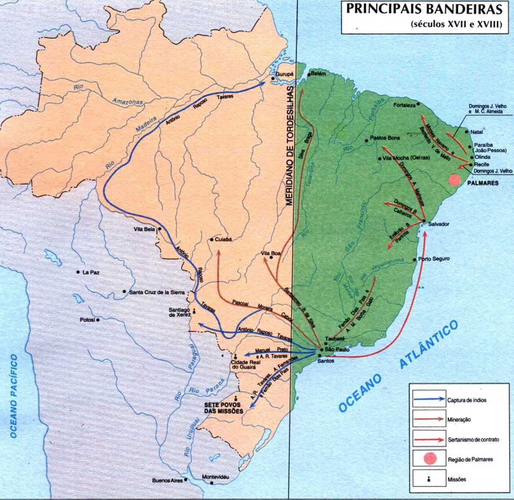
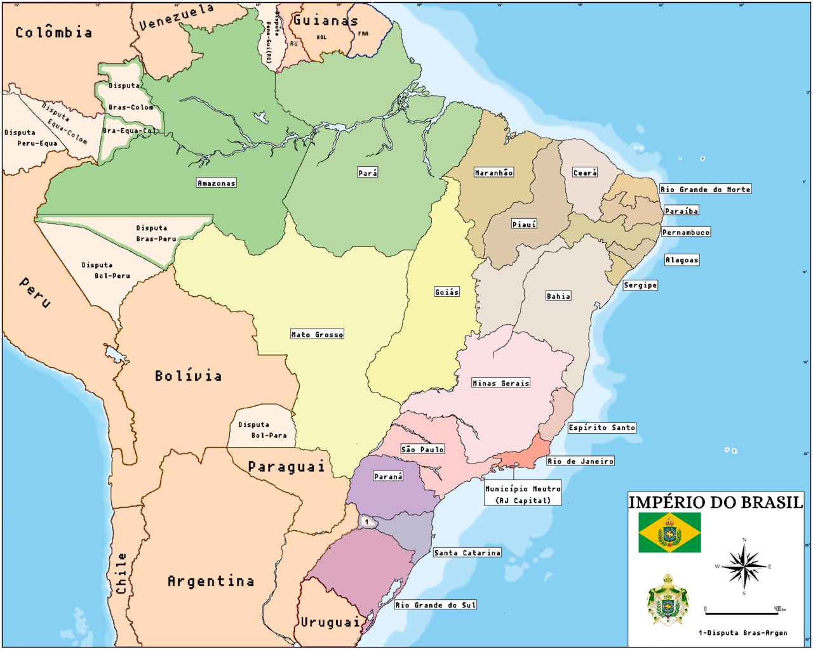
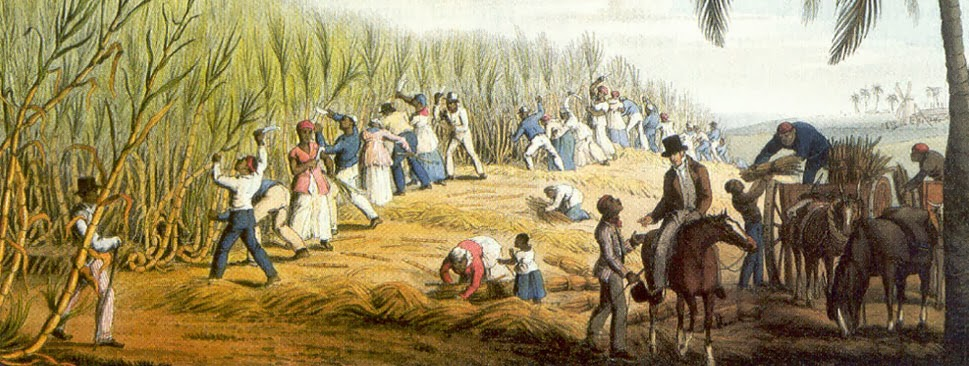
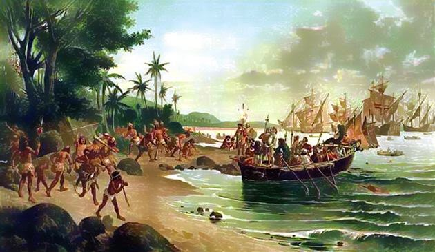
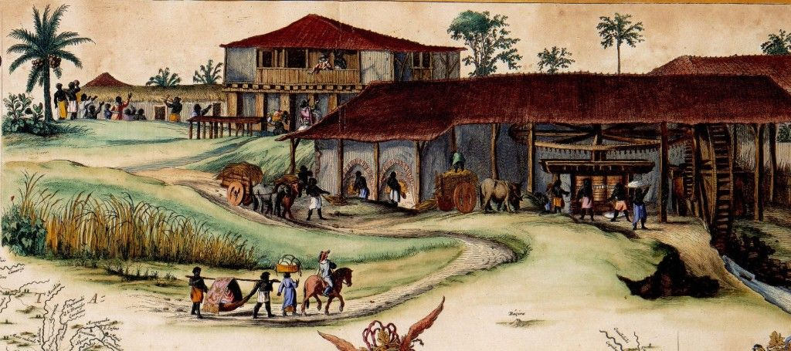
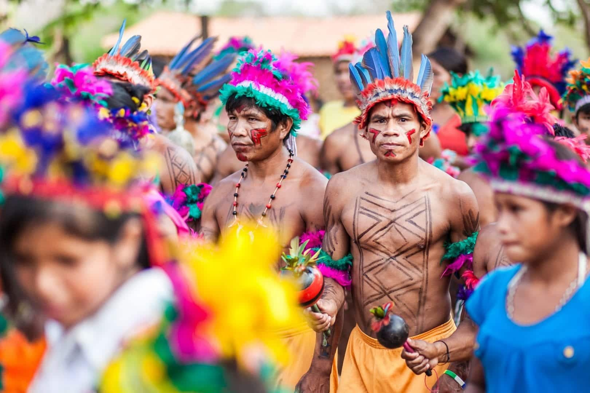
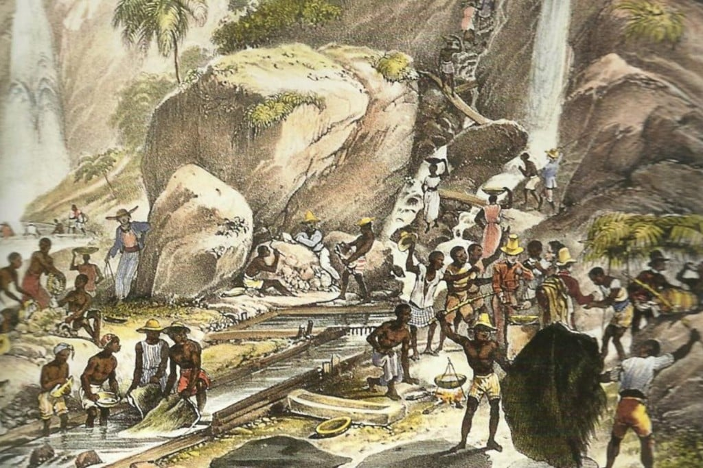
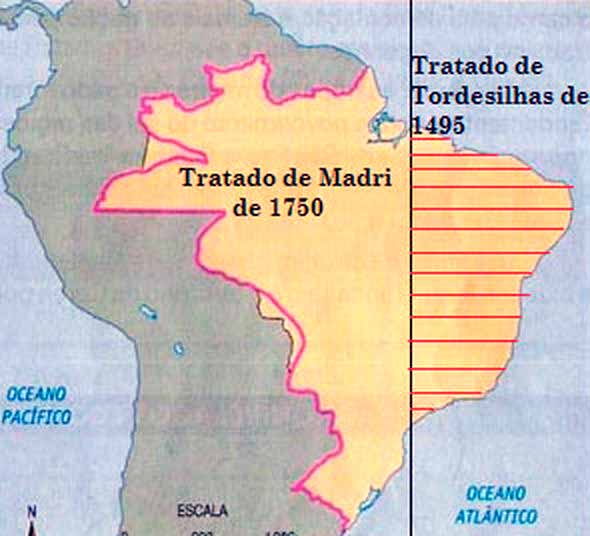
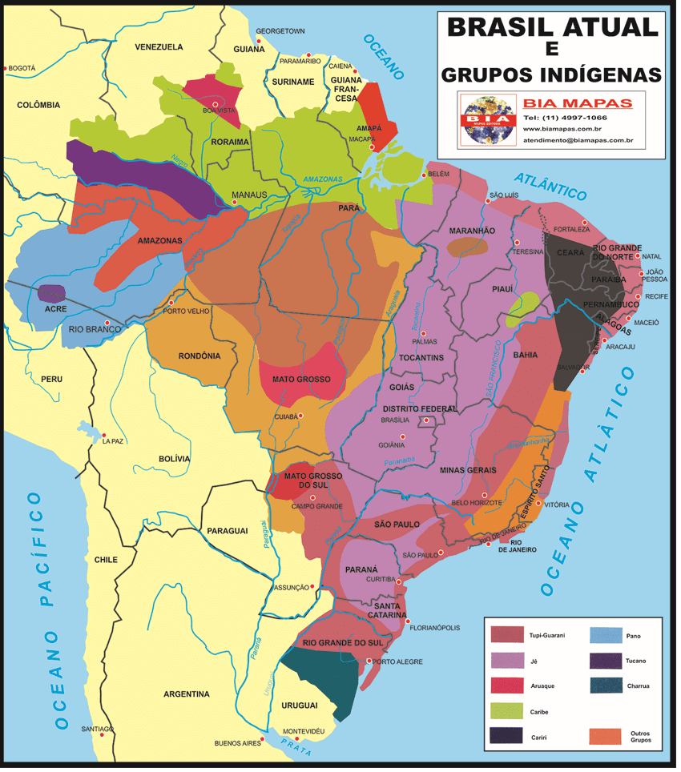

Título: Dinâmicas de Poder e a Formação Territorial do Brasil.
Subtítulo: A Interação entre Portugal, Indígenas e Colonos.
Texto de boas-vindas:
Bem-vindo ao nosso site sobre a dinâmica de poder que moldou as fronteiras do Brasil. Navegue pelas seções para descobrir as nuances desse processo histórico fascinante.
Guias de navegação:
A história da formação territorial do Brasil é marcada por complexas dinâmicas de poder que envolvem Portugal, as populações indígenas e os colonos ao longo dos séculos XVI a XIX. Desde a chegada dos portugueses, as interações entre esses grupos moldaram não apenas as fronteiras físicas do país, mas também sua identidade cultural e social.
Este projeto foi desenvolvido como parte da disciplina de História pela turma de Informática 3M, com o objetivo de explorar a formação territorial do Brasil e suas implicações sociais, culturais e políticas. Através de uma análise detalhada das dinâmicas de poder entre Portugal, as populações indígenas e os colonos, abordamos como esses fatores contribuíram para a definição das fronteiras brasileiras entre os séculos XVI e XIX. Além disso, o trabalho busca discutir as consequências dessas interações para a construção da identidade nacional e os impactos que reverberam até os dias de hoje.
De que maneira a dinâmica de poder entre Portugal, as populações indígenas e os colonos contribuiu para a formação das fronteiras territoriais do Brasil entre os séculos XVI e XIX?
A chegada dos portugueses ao Brasil em 1500 deu início a um processo de colonização que alterou profundamente a configuração territorial da América do Sul. O Tratado de Tordesilhas (1494) dividiu as terras descobertas entre Portugal e Espanha, limitando inicialmente a exploração portuguesa. Contudo, as expedições de exploração, como as bandeiras, buscaram expandir os domínios portugueses além das áreas estipuladas, levando a conflitos com os povos indígenas. A instalação de capitanias hereditárias e o surgimento de vilas e cidades, como Salvador, foram passos importantes na consolidação territorial.
A independência do Brasil em 1822 trouxe novas dinâmicas de poder, com a necessidade de consolidar um território vasto e diverso. As guerras de independência nas Américas influenciaram o Brasil, e a relação com as populações indígenas tornou-se ainda mais complexa à medida que o governo buscava expandir as fronteiras e integrar esses povos ao novo estado. O período imperial também foi marcado por tratados com vizinhos, como o Tratado de Paz e Amizade com a República do Paraguai, e tensões internas que moldaram a geopolítica da região.
Fonte: História Brasileira
A Coroa Portuguesa exerceu controle rigoroso sobre as colônias, estabelecendo diretrizes para a ocupação e administração das terras. O sistema de donatários e a criação das capitanias hereditárias foram tentativas de consolidar o poder e promover a colonização. A exploração de recursos, como o açúcar, e a implementação do sistema de plantation dependiam da relação com os indígenas e a força de trabalho escrava africana. A dinâmica de poder entre a Coroa e os colonos frequentemente gerou tensões, resultando em revoltas e pedidos de autonomia.
As populações indígenas enfrentaram diferentes estratégias de colonização, desde resistências armadas até alianças temporárias. Muitas tribos, como os tupinambás e os guaranis, inicialmente interagiram com os colonizadores, mas, à medida que a colonização avançava, a resistência se intensificou. As missões jesuíticas também desempenharam um papel significativo, tentando proteger os indígenas da exploração, mas muitas vezes impondo mudanças culturais. A dinâmica de poder entre os colonizadores e os indígenas é marcada por conflitos violentos, mas também por trocas culturais que influenciaram a formação do Brasil.
Os colonos, em sua busca por riquezas e novas terras, tornaram-se um agente importante na formação das fronteiras. A relação entre os colonos e a Coroa foi marcada por acordos e conflitos, especialmente em relação à exploração de recursos e à ocupação de terras indígenas. A criação de vilas e a expansão agrícola foram impulsionadas por interesses econômicos, que frequentemente ignoravam os direitos e as culturas indígenas. O papel dos colonos foi, portanto, tanto de ocupadores quanto de mediadores entre diferentes culturas e interesses.
A formação das fronteiras brasileiras não se deu apenas pela ocupação física, mas também pela construção de uma identidade cultural mista, resultado da convivência entre indígenas, portugueses e africanos. Essa miscigenação gerou uma rica diversidade cultural, manifestada na língua, religião e costumes. Contudo, a imposição de uma cultura dominante e a marginalização de outros grupos resultaram em tensões sociais que perduram até os dias atuais.
A exploração de recursos naturais e a formação de rotas comerciais moldaram a economia colonial e, posteriormente, a economia do Império. A agricultura e a extração de ouro, além do tráfico de escravos, foram fundamentais para a riqueza da colônia. No entanto, essas práticas também geraram desigualdades regionais e conflitos, à medida que as diferentes regiões buscavam autonomia econômica e política.
A luta pelo controle das terras e a imposição de limites territoriais influenciaram a configuração política do Brasil. As interações entre colonos e indígenas resultaram em tratados e alianças, enquanto a Coroa buscava consolidar o poder central e a unidade territorial. Essa dinâmica política foi crucial para a formação do estado nacional e para a definição das fronteiras que moldam o Brasil contemporâneo.
Fonte: História Brasileira
A dinâmica de poder entre Portugal, as populações indígenas e os colonos foi um elemento central na formação territorial do Brasil. As interações complexas entre esses grupos não apenas moldaram as fronteiras, mas também contribuíram para a diversidade cultural e social do país. Este site buscou explorar essas relações e suas implicações históricas, evidenciando a importância de compreender a formação do Brasil em sua totalidade.
Livros e artigos acadêmicos:
Artigos online e fontes digitais:
Créditos:
Trabalho desenvolvido por Leanderson Borges, Ycaro Manoel, Diógenes Santiago e Andriê igor.
Disciplina de História I - 2º Bimestre de 2024
Professora: Bruna Rafaela
Contato: